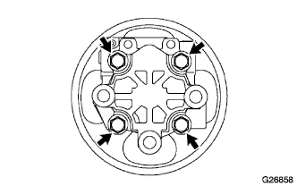

Bane pump assembly (4WD) assembly |
| 1. Attach the vane pump housing oil seal |
Apply a small amount of MP grease No.2 to the lip of the new housing oil seal.
 |
Use SST and press to press the housing oil seal until the upper end of the housing front.
| 2. Shaft SUB-ASSY installation |
Apply power steering fluid to the shaft.
 |
Wrap the protective tape around the shaft spline and attach it to the housing front.
| 3. Bane pump side plate front mounting |
Apply a power steering fluid to the new side plate O -ring No.2.
 |
Attach the side plate O -ring No.2 to the housing front.
 |
Apply a power steering fluid to the new side plate O -ring No.1.
Attach the side plate O -ring No.1 to the side plate front.
 |
Match the semicircle hole on the side plate front and the semicircular hole on the housing front and attach the side plate front.
| 4. Installation of vane pump cam ring |
The scanning mark is up, the semicircle hole of the vane pump cam ring and the semicircular hole on the side plate front are attached, and the vane pump cam ring is attached to the housing front.
| 5. Installation of vane |
Attach the vane ponpra to the housing front.
 |
Apply power steering fluid to 10 vane pump plates.
With the round side of the end face on the outside, attach 10 bean pump plates to the vannopon procta.
| 6. Bane pump shaft snapping installation |
Use a SST and minus thin blade driver to attach a new shaft snap ring.
| 7. Bane pump Houjin Griller installation |
Apply a power steering fluid to the new housing O -ring.
Attach the housing O -ring to the Houjin Griller.
 |
Match the straight pin to the pin hole in the vane pump cam ring and attach the Houjinglia to the housing front.
|  |
Attach the housing liller to the housing front with four bolts.
| 8. Preload inspection |
Make sure that the shiaftwise pulley rotates smoothly and has no noise.
Attach a bolt (M10 × P1.25) to the sheaftway pulley.
Inspect the rotation torque of the shiaftwise pulley.
| 9. Power steering oil pressure sensor installation |
Apply power steering fluid to the O -ring.
Attach the oil pressure sensor to the housing front.
| 10. Flow control valve installation |
Attach the compression spring to the housing front.
Apply a power steering fluid to the flow control valve.
Attach the flow control valve to the housing front.
Apply power steering fluid to the new pressureport union O -ring.
Attach the pressureport union O -ring to the pressureport union.
 |
Use a socket wrench 27mm to attach the pressureport union to the housing front.
| 11. Pump bracket FR installation |
Attach the bracket FR and bracket RR with two bolts.
| 12. Bane pump oil reservoir assertion |
Apply a power steering fluid to the new O -ring and attach it to the oil reserve ass.
With three bolts, attach the oil reservoir associate to the vane pump housing.